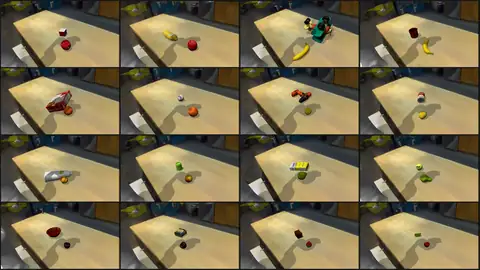

Scenes and terrains¶
A scene is the set of named entities an environment builds: the robot, the ground, the props, and the welds
between them. This page covers SceneOptions and the scene presets, the object libraries you can drop into a
scene, placing objects on support surfaces, procedural terrains, and Gaussian-splat scenes of real rooms. How
each entity behaves once built is on Entities; the robots themselves are on Robots.
SceneOptions¶
SceneOptions (in eden.options.entities) takes each entity as a keyword
argument; the keyword is the entity's name in env.entities and in every term that refers to it.
import eden as en
from eden.options.entities import BoxOptions, PlaneOptions, SceneOptions
from eden.options.objects.ycb import YCB003CrackerBox
scene_options = SceneOptions(
plane=PlaneOptions(),
robot=en.robots.Droid(base_pos=(0.0, 0.0, 0.0)), # a composite: expands into "robot" + "gripper"
box=YCB003CrackerBox(default_root_pos=(0.5, 0.0, 0.1)),
marker=BoxOptions(size=(0.02, 0.02, 0.02), default_root_pos=(0.5, 0.2, 0.3), fixed=True),
)
What SceneOptions checks when it is constructed:
- Every value is an entity options object or a composite rig; anything else raises.
- A composite is placed under its primary body's name (
Droid'sarm_name,"robot"by default), and no two entities, plain or composite-produced, share a name. - A scene with a Mochi entity holds only Mochi and kinematic entities (see Mochi entities).
attachments_dict welds entities together (see Attaching entities).
named_entities() returns every entity the scene will build, composites expanded. A task variant drops an entity
with scene_options.remove_entity(name), which also removes that entity's own weld; it refuses an entity others
are welded onto, a field declared on a SceneOptions subclass, and a single body of a composite. Removing an
entity does not touch the terms, cameras or sensors that name it, so update those too.
Gaussian-splat options are not part of SceneOptions: they live on the config root because they select the
environment class (see Gaussian-splat scenes).
Scene presets¶
The presets in eden.options.scenes (also en.scenes) are factory functions that return a plain
SceneOptions, so a config built from one saves and reloads like any other.
| Preset | Short alias | Entities it adds |
|---|---|---|
EmptySceneOptions(robot, *, is_support_enabled=False, surface=None, **entities) |
en.scenes.Empty |
robot, plane |
BimanualEmptySceneOptions(right_robot, left_robot, *, ...) |
en.scenes.BimanualEmpty |
right_robot, left_robot, plane |
TabletopSceneOptions(robot, *, plane=None, table=None, **entities) |
en.scenes.Tabletop |
robot, plane, table (a work table at x = 0.5 m) |
KitchenCountertopSceneOptions(robot, *, plane=None, countertop=None, **entities) |
en.scenes.KitchenCountertop |
robot, plane, countertop |
LBMEvalSceneOptions(left_robot=None, right_robot=None, plane=None, **entities) |
en.scenes.LBMEval |
the LBM Riverway dual-arm station with two Pandas (default) on its gantry plates |
In Empty and BimanualEmpty, is_support_enabled and surface configure the default plane. Passing
plane=... replaces the flat ground with your own entity (a TerrainOptions, a low-friction plane) under the
same name, so everything that addresses the ground by name keeps working; combining it with
is_support_enabled or surface raises, since there is no default plane left to configure.
Benchmark ports ship their own scene factories, each returning a SceneOptions:
| Module | Factories |
|---|---|
eden.options.scenes.libero |
LiberoTabletopSceneOptions, LiberoFloorSceneOptions, LiberoKitchenTabletopSceneOptions, LiberoLivingRoomTabletopSceneOptions, LiberoStudyTabletopSceneOptions, LiberoCoffeeTableSceneOptions (each LIBERO workspace with its Panda, mounted where LIBERO mounts it) |
eden.options.scenes.robocasa.base |
RobocasaOneWallSmall, RobocasaOneWallLarge, RobocasaLShapedSmall, RobocasaLShapedLarge, RobocasaGalley, RobocasaUShapedSmall, RobocasaUShapedLarge, RobocasaGShapedSmall, RobocasaGShapedLarge, RobocasaWraparound, each also as ...Empty (kitchen only, no accessories); first argument style ("industrial", "scandinavian", "modern_1", …) |
eden.options.scenes.robocasa365.base |
Robocasa365Layout001 … Robocasa365Layout010, each also as ...Empty; first argument style ("style001", …) |
eden.options.scenes.replica_cad.base |
ReplicaCADSceneOptions(config_path), assembled from an upstream ReplicaCAD scene JSON |
eden.options.scenes.calvin |
CalvinPlayTableSceneOptions(robot=None), the CALVIN play table with its three blocks |
Of these, only the LIBERO scenes back shipped tasks (see LIBERO); the others are scene and asset ports you can build tasks on.
CALVIN play table¶
Eden ships no CALVIN tasks, only the scene and its assets, as a starting point for your own:
import eden as en
from eden.options.scenes.calvin import CalvinPlayTableSceneOptions
scene_options = CalvinPlayTableSceneOptions(robot=en.robots.FrankaEmikaPanda()) # set the robot's pose yourself
CalvinPlayTableSceneOptions(robot=None, **entities) returns a SceneOptions with plane, table and the
three blocks block_red, block_blue and block_pink resting on the table, plus robot when you pass one and any
further entities. Place the robot yourself: the factory sets no robot pose.
The assets are in eden.options.objects.calvin, built from the original CALVIN URDFs (table D) and fetched
from the family's own Hub dataset (CALVIN_HF_DATASET = "eden_calvin") into the calvin cache subdirectory:
| Class | Registry key (CALVIN_OBJECT_REGISTRY) |
What it is |
|---|---|---|
CalvinPlayTable |
table |
the play table, fixed and articulated: DOFs base__slide, base__drawer, base__button, base__switch (all 0 by default) |
CalvinRedBlock |
block_red |
the medium block |
CalvinBlueBlock |
block_blue |
the small block |
CalvinPinkBlock |
block_pink |
the large block |
Every CALVIN asset is scaled by CALVIN_GLOBAL_SCALING = 0.8. On first use the table's URDF tree is copied to a
per-user cache with the texture coordinates stripped from its OBJ meshes, so the mesh loaders accept them, and
its concave base is decomposed tightly (decompose_robot_error_threshold=0.0) so blocks rest on the visual
tabletop instead of inside a single convex hull.
Objects¶
Object libraries live in eden.options.objects.<family>. Each family is an EntityOptions subclass that fixes
the Hub dataset, the cache subdirectory and the asset's axes, and each object is a subclass that names its file:
from eden.options.objects.ycb import YCB003CrackerBox, YCB006MustardBottle
from eden.options.objects.objaverse import ObjaverseApple
box = YCB003CrackerBox(default_root_pos=(0.5, 0.0, 0.1))
apple = ObjaverseApple(variant=3, default_root_pos=(0.4, 0.1, 0.05)) # Objaverse classes hold several meshes
Override fields as for any entity: is_fixed_base, scale, material=RigidMaterialOptions(rho=..., friction=...),
default_geoms_sol_params (to stiffen an object a gripper holds, see
Closed-loop grippers).
| Module | Family | What it holds | Classes |
|---|---|---|---|
ycb |
YCBOptions |
the YCB object set (YCB002MasterChefCan, …) |
79 |
objaverse |
ObjaverseObjectOptions |
Objaverse meshes, one class per category with numbered variants; OBJAVERSE_OBJECTS_REGISTRY |
82 |
robolab |
RoboLabObjectOptions, RoboLabFixtureOptions |
the RoboLab library (YCB, HOPE, HOT3D, HANDAL, VOMP, Objaverse, fruits and vegetables, blocks, fixtures) converted to URDF; ROBOLAB_REGISTRY keys like "ycb/banana" |
323 |
replica_cad |
ReplicaCADObjectOptions |
ReplicaCAD stages and furniture; REPLICA_CAD_STAGE_REGISTRY, REPLICA_CAD_OBJECT_REGISTRY |
107 |
robocasa / robocasa365 |
RoboCasa / RoboCasa365 kitchen layouts and accessories; ROBOCASA*_KITCHEN_REGISTRY, ROBOCASA*_ACCESSORIES_REGISTRY |
149 / 137 | |
libero |
LiberoObjectOptions |
LIBERO objects and workspaces; LIBERO_OBJECT_REGISTRY |
42 |
robosuite |
RobosuiteObjectOptions |
the robosuite benchmark objects and the Rethink mount | 24 |
lbm_eval |
LBMEvalObjectOptions |
LBM-eval objects and the Riverway station | 51 |
polaris |
PolarisObjectOptions |
PolaRiS objects | 32 |
simpler |
SimplerObjectOptions |
SIMPLER objects | 10 |
calvin |
CalvinObjectOptions |
the CALVIN play table and blocks; CALVIN_OBJECT_REGISTRY |
5 |
dextoolbench |
DexToolBenchOptions |
the DexToolBench hand tools; DEXTOOLBENCH_REGISTRY |
13 |
arctic |
ArcticObjectOptions |
ARCTIC articulated objects; ARCTIC_OBJECTS_REGISTRY |
6 |
omomo |
OMOMOObjectOptions |
OMOMO interaction objects; OMOMO_OBJECTS_REGISTRY |
16 |
piano, husky, mujoco_playground |
single assets: Piano (an 88-key keyboard), HuskySkateboard, DexCube |
1 each |
"Classes" counts every class in the module, family bases included. Each family caches into its own subdirectory of the asset root, and its files download on first use (see Assets).
Mesh objects and the solver frame
A free mesh object is re-origined onto its centre of mass, so get_pos() and default_root_pos are
different points unless you pass relative=True (see
Which frame?). The gap is largest for tools and
long objects whose centre of mass sits far from the mesh origin (2.9 to 14.8 cm on the DexToolBench tools).
Primitives (BoxOptions, SphereOptions, CylinderOptions, PlaneOptions) need no asset. A primitive's mass
comes from its volume and material.rho (RigidMaterialOptions defaults to rho=200.0).
Finding an asset¶
eden view <Name>opens any robot or object in the viewer (-cshows collision geometry);eden snap <Name>renders an image;eden arrange <Name> [<Name> ...]poses several with sliders and prints aSceneOptionssnippet. Names are class names (RoboLabYcbBanana) or family-registry keys (robolab/ycb/banana, and the bare key when it is unambiguous).- In code,
eden.options.catalog.find_entity_options(name)resolves the same names to the class. It reads an index of every class undereden.options.objectsandeden.options.robots, cached on disk and rebuilt when a source file changes. -
eden.options.catalog.MANIFESTis a smaller, curated index with semantic metadata (category, placement, whether an asset is a support surface or a container), currently populated from ReplicaCAD:
Placing objects on support surfaces¶
An entity with is_support_enabled=True extracts its upward-facing surfaces after the build, and the placement
event terms sample collision-free poses on them for another entity, per environment:
# examples/recipes/scenes/asset_placement.py
env = EnvBase(
env_options=EnvOptions(num_envs=8),
scene_options=SceneOptions(
plane=PlaneOptions(),
station=LBMRiverwayStation(), # support-enabled, restricted to its table top
cube=BoxOptions(size=(0.04, 0.04, 0.04), is_fixed_base=False),
),
event_options=EventManagerOptions(
place_cube=EventTerm.configure(
mode=EventMode.RESET,
func=place_uniform,
params={"entity_name": "cube", "support_entity_name": "station", "samples_per_area": 100},
),
),
)
The placement terms in eden.managers.terms.events.placement are place_uniform, place_constant_xy,
place_range_xy, PlaceGaussian and PlaceFromLayouts (see Events). The support fields on the
entity tune the extraction:
| Field | Default | Meaning |
|---|---|---|
is_support_enabled |
False |
extract support surfaces at build |
support_links_name |
[] |
only these links' geometry counts (empty: every link); use it on a multi-link asset whose other surfaces must not receive objects |
support_minimum_clearance |
0.05 |
the free height a surface needs above it |
support_shrink |
0.1 |
inset applied to each surface polygon |
support_sample_method |
"uniform" |
"uniform" or "grid" |
support_num_sample_points |
300 |
sample points per square metre (uniform) |
support_grid_size |
0.01 |
grid spacing (grid) |
Support surfaces are extracted only for contact-producing rigid entities: the option is ignored on a kinematic entity (with a warning) and rejected on deformable and Mochi entities.
Terrains¶
A TerrainOptions entity is a height field stitched from a rows × cols grid of terrain generators, one per
subterrain cell. The built entity is a fixed Terrain, placed with default_root_pos at
the grid's [0, 0] corner.
# eden/tasks/velocity_tracking/terrain/config.py
import eden as en
from eden.options.entities import SceneOptions, TerrainOptions
from eden.utils.terrains import (
FlatTerrain,
PyramidSlopedTerrain,
PyramidStairsTerrain,
RandomUniformTerrain,
WaveTerrain,
)
def _make_terrain_grid() -> list[list]:
grid = []
for i in range(10): # rows: difficulty increases along x
t = i / 9
sh, sl, rh, wa = round(t * 0.1, 4), round(t * 1.0, 4), round(0.02 + t * 0.08, 4), round(t * 0.2, 4)
grid.append([
FlatTerrain.configure(),
FlatTerrain.configure(),
PyramidStairsTerrain.configure(step_width=0.3, step_height=sh),
PyramidStairsTerrain.configure(step_width=0.3, step_height=sh),
PyramidStairsTerrain.configure(step_width=0.3, step_height=-sh),
PyramidStairsTerrain.configure(step_width=0.3, step_height=-sh),
PyramidSlopedTerrain.configure(slope=sl),
PyramidSlopedTerrain.configure(slope=-sl),
RandomUniformTerrain.configure(min_height=-rh, max_height=rh, step=0.02, downsampled_scale=0.5),
WaveTerrain.configure(num_waves=4.0, amplitude=wa),
])
return grid
scene_options = SceneOptions(
terrain=TerrainOptions(
subterrain_size=(8.0, 8.0),
horizontal_scale=0.1,
vertical_scale=0.005,
terrain_generators=_make_terrain_grid(),
default_root_pos=(-10 * 8.0 / 2.0, -10 * 8.0 / 2.0, 0.0), # centre the 80 x 80 m grid on the origin
),
robot=en.robots.G1Dofs29(),
)
examples/recipes/terrain/terrain_gen.py previews every generator.
TerrainOptions fields¶
| Field | Default | Meaning |
|---|---|---|
terrain_generators |
[[FlatTerrain.configure()]] |
the grid; must be rectangular, rows along x and columns along y |
subterrain_size |
(32.0, 32.0) |
size of each cell in metres (holds every built-in parkour course) |
horizontal_scale |
0.25 |
height-field cell size in metres |
vertical_scale |
0.005 |
metres per height unit |
randomize |
False |
when False, every cell is generated from seed 0, so the terrain is the same on every run |
use_checker_surface |
False |
render a checkerboard (1 m squares by default); cannot be combined with surface |
uv_scale |
None |
texture repeats across the whole terrain, a scalar or (x, y); None picks one repeat per axis, or 1 m checker squares |
default_root_pos |
(0, 0, 0) |
world position of the grid's [0, 0] corner; default_root_quat must stay the identity |
A terrain is always fixed, carries no DOFs, and cannot take a Mochi material. To put a robot on terrain in a
preset scene, pass it as the ground: en.scenes.Empty(robot=..., plane=TerrainOptions(...)).
Generators¶
All generators are in eden.utils.terrains and registered in TERRAIN_GENERATOR_REGISTRY. Configure one with
<Generator>.configure(**params); heights are in metres unless the parameter says otherwise.
| Generator | Parameters (defaults) |
|---|---|
FlatTerrain |
none |
RandomUniformTerrain |
min_height=-0.1, max_height=0.1, step=0.1, downsampled_scale=0.5 |
SlopedTerrain |
slope=-0.5 |
PyramidSlopedTerrain |
slope=-0.1 |
DiscreteObstaclesTerrain |
max_height=0.05, min_size=1.0, max_size=5.0, num_rects=20 |
WaveTerrain |
num_waves=2.0, amplitude=0.1 (waves along both axes) |
StairsTerrain, PyramidStairsTerrain |
step_width=0.75, step_height=-0.1 |
SteppingStonesTerrain |
stone_size=1.0, stone_distance=0.25, max_height=0.2, platform_size=0.0 |
FractalTerrain |
levels=8, scale=1.0 |
PerlinNoiseTerrain |
octaves=6, persistence=0.5, lacunarity=2.0, scale=20.0, amplitude=1.0 (in vertical_scale units), seed=-1 (random) |
GapTerrain |
gap_width=0.3, gap_depth=1.0, platform_width=1.0, num_gaps=4 |
PitTerrain |
pit_depth=0.5, pit_size_range=(0.5, 1.5), num_pits=8, platform_size=1.0 |
RidgeTerrain |
ridge_height=0.15, ridge_width=0.1, ridge_spacing=0.5 |
CraterTerrain |
crater_depth=0.3, crater_radius_range=(0.5, 2.0), num_craters=6 |
NarrowBeamsTerrain |
num_beams=16, beam_width=0.3, beam_height=0.2, platform_width=1.5, floor_depth=1.0 |
RandomGridTerrain |
grid_width=0.5, grid_height_range=(0.0, 0.3), platform_width=1.0 |
RandomBoxesTerrain |
num_boxes=40, box_size_range=(0.3, 1.0), box_height_range=(0.05, 0.5), platform_width=1.0 |
TiltedGridTerrain |
grid_width=1.0, tilt_range=15.0, height_range=0.1, platform_width=1.0 |
NestedRingsTerrain |
num_rings=5, ring_width=0.4, gap_width=0.2, height_range=(0.1, 0.4), platform_width=1.0 |
HeightFieldFileTerrain |
file: an exported height-field .npz (see below) |
The parkour course generators, ported from extreme-parkour, carve corridor courses and also emit waypoint
goals for goal-following commands: ParkourTerrain, ParkourGapTerrain, ParkourHurdleTerrain,
ParkourStepTerrain, ParkourDemoTerrain and GapParkourTerrain. HalfSlopedTerrain emits a slope direction,
and HalfPlatformTerrain and CustomSteppingStonesTerrain are standalone obstacles. Their parameters and the
guarantees on their goals are documented in eden/utils/terrains/parkour_terrains.py; the
extreme_parkour task uses them on 16 × 4 m lanes. A generator that raises (a course that does not fit its
cell) is reported with the cell's row and column.
The Terrain entity¶
After the build, the terrain answers height and layout queries:
| Member | Returns |
|---|---|
bounds |
(x_min, x_max, y_min, y_max) in world metres |
get_height(grid) |
heights (world z) at (B, h, w, 2) world xy points, bilinear; pass normalize=False if the points are already in [-1, 1] |
subterrain_origins |
(rows, cols, 3) world centres of the cells |
goals, goals_count |
(rows, cols, max_goals, 3) world waypoints per cell and the real count per cell (raises unless every cell's generator produces goals) |
slope_vectors |
(rows, cols, 3) per-cell slope directions (only HalfSlopedTerrain sets them) |
height_field_units |
the stitched height field in vertical_scale units (numpy, dim 0 = x) |
export_height_field(path) |
write the height field in metres to a versioned .npz |
The GridScanDots observation (eden.managers.terms.observations.locomotion) samples get_height around the
robot for a height scan; the velocity-tracking terrain task uses it (see Observations).
Height fields on disk¶
Terrain.export_height_field(path) and eden.utils.terrains.export_height_field write a small .npz format
(version 1: height_field in metres with axis 0 along world +x, horizontal_scale, and the origin of corner
[0, 0]), for offline tools such as the terrain-adaptive retargeter (see
TCRS terrain adaptation). To rebuild that exact terrain in a scene:
from eden.utils.terrains import terrain_options_from_height_field_file
terrain = terrain_options_from_height_field_file("terrain.npz") # a TerrainOptions at the file's origin
It wraps the file in a one-cell grid of HeightFieldFileTerrain with vertical_scale=1.0 and the matching
subterrain_size; building that by hand, the sizes must match the file or the generator raises.
Writing a generator¶
Subclass TerrainGenerator, declare parameters as annotated class attributes, register it, and fill
subterrain.height_field_raw (indexed (x, y), in vertical_scale units) in compute:
import numpy as np
from eden.utils.terrains import TERRAIN_GENERATOR_REGISTRY, TerrainGenerator
@TERRAIN_GENERATOR_REGISTRY.register()
class RampTerrain(TerrainGenerator):
"""A ramp that rises along x."""
rise: float = 0.5 # metres over the cell
def compute(self, subterrain):
rows, cols = subterrain.height_field_raw.shape
ramp = np.linspace(0.0, self.rise / subterrain.vertical_scale, rows)
subterrain.height_field_raw[:] = ramp[:, None]
return subterrain
Then use it in a grid as RampTerrain.configure(rise=0.3). Generators that emit goals set subterrain.goals (an
(N, 2) array in cell-local metres); see the parkour module for the conventions.
Gaussian-splat scenes¶
A splat scene renders a photogrammetric capture of a real room (a Gaussian-splat .ply) behind the simulated
robot and objects. This is how the PolaRiS tasks put a simulated DROID arm into scanned kitchens and evaluate
policies in them (real-to-sim evaluation).

The splat is not an entity. It is configured with splat_options on the config root, and the config class
selects the environment class:
| Config | Environment | splat_options type |
Backend |
|---|---|---|---|
EdenSplatConfig |
SplatEnvBase |
SplatOptions |
gsplat, composited over the sim render |
EdenSplatRLConfig |
SplatRLEnvBase |
SplatOptions |
gsplat, with the full RL manager surface |
EdenNyxSplatConfig |
NyxSplatEnvBase |
NyxSplatOptions |
Nyx path tracer, splat as a light field |
All three are in eden.utils.configs; the options are in eden.options.splat. Each
splat file is a PCDOptions passed by name:
# eden/tasks/polaris/base_config.py (make_polaris_splat) and food_bussing/config.py
from eden.options.splat import PCDOptions, SplatOptions
splat_options = SplatOptions(
background=PCDOptions(
path="food_bussing/assets/g60_corner_charuco_static/splat.ply",
dataset="eden_polaris",
assets_subdir="polaris",
pos=(0.52, 0.6, 0.42),
quat=(0.5, -0.5, -0.5, -0.5),
),
)
PCDOptions fields: path (fetched from registry / dataset when it is not a local file, at construction),
scale, pos, quat (wxyz), multiplier and tint (Nyx only), and attach_entity / attach_link, which make
the splat follow an entity's pose per environment (requires SplatOptions(per_env_gaussians=True)).
SplatOptions fields:
per_env_gaussians(defaultFalse): one shared Gaussian set for every env (memory-light), or one per env so attached splats follow each env's poses (memory grows withnum_envs).minibatch(defaultNone): render this many envs at a time to bound peak VRAM.camera_mode(default"auto"):"single"renders one env-invariant view and broadcasts it,"batched"renders every env's camera, and"auto"picks batched for attached or following cameras and whenper_env_gaussiansis on."single"withper_env_gaussians=Trueraises.
The splat stands behind empty space only where the camera's SplatComposite overlay lets it; a task whose splat
replaces a simulated surface (a table plane) names that entity in the overlay, as the PolaRiS tasks do with
SplatComposite.configure(entities=["plane"]). Camera overlays, the renderers and the Nyx options are covered
on Sensors and rendering.
To inspect a capture on its own, eden view path/to/splat.ply opens it in the viewer (-m scales its radiance,
--env-brightness sets the background). The PolaRiS tasks are described on PolaRiS.
See also¶
- Entities: frames, contacts, friction, deformables
- Robots: robot presets and composite rigs
- Events: placement and reset events
- Task configuration: where
scene_optionssits in a task config - Velocity tracking: a task on procedural terrain
- API:
eden.options.entities,eden.options.scenes,eden.options.splat